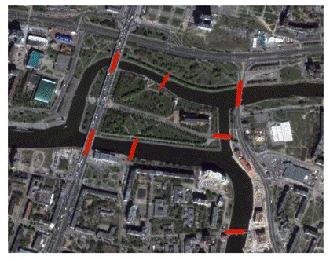

Conjuntos
Aplicación Geogebra
Grafo
Dado el mapa de Königsberg, con el río Pregel dividiendo el plano en cuatro regiones distintas,
que están unidas a través de los siete puentes,
¿es posible dar un paseo comenzando desde cualquiera de estas regiones,
pasando por todos los puentes, recorriendo solo una vez cada uno, y regresando al mismo punto de partida?
